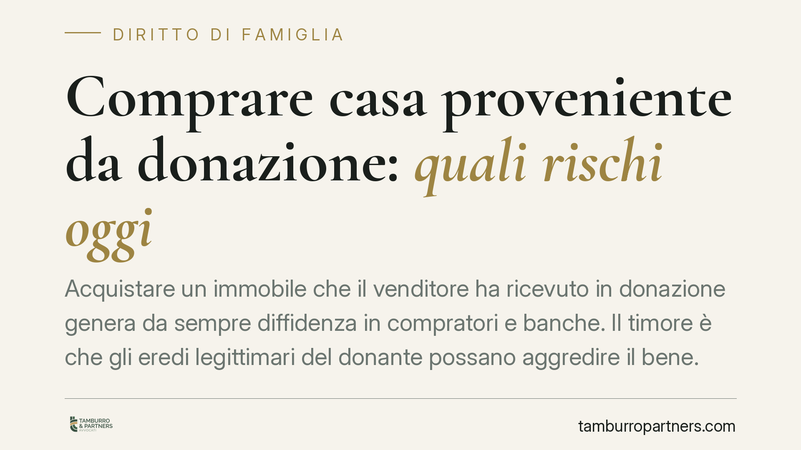

Comprare casa proveniente da donazione: quali rischi oggi
Acquistare un immobile che il venditore ha ricevuto in donazione genera da sempre diffidenza in compratori e banche. Il timore è che gli eredi legittimari del donante possano aggredire il bene. Vediamo cosa prevede davvero il diritto vigente, quali tutele esistono e come muoversi prima di firmare, senza allarmismi ma con le dovute cautele.

Perché la provenienza donativa spaventa
Quando il venditore ha acquistato la casa non comprandola, ma ricevendola in donazione, molti acquirenti si fermano. E spesso si fermano anche le banche, che diventano prudenti nel concedere il mutuo o nell'iscrivere ipoteca.
Il motivo è concreto. Alla morte del donante alcuni familiari — i legittimari (coniuge, figli e, in loro assenza, ascendenti: soggetti ai quali la legge riserva comunque una quota di eredità, la cosiddetta *legittima*) — potrebbero scoprire di aver ricevuto meno di quanto spetta loro. In questo caso la legge offre strumenti per recuperare il valore mancante, e la donazione fatta in vita dal defunto entra nel calcolo.
Il quadro normativo vigente
Occorre distinguere due azioni diverse, perché colpiscono soggetti diversi.
La prima è l'azione di riduzione (artt. 553 e seguenti del codice civile). Si esercita contro il donatario, cioè chi ha ricevuto la donazione. Serve a ridurre le disposizioni che hanno leso la quota di legittima. È un'azione che riguarda, in prima battuta, il rapporto tra eredi e beneficiario della donazione.
La seconda è l'azione di restituzione (art. 563 c.c.). Questa è quella che preoccupa l'acquirente: se il patrimonio del donatario non basta a soddisfare il legittimario, l'azione può arrivare a colpire il terzo acquirente del bene donato, cioè chi quella casa l'ha comprata in buona fede.
La legge, però, pone un limite temporale rilevante. L'art. 563 c.c., come modificato dalla legge 14 maggio 2005, n. 80, prevede che l'azione di restituzione nei confronti del terzo non possa essere esercitata se sono trascorsi vent'anni dalla trascrizione della donazione. È importante la precisione: il termine decorre dalla trascrizione dell'atto di donazione, non genericamente dalla morte del donante.
Il coniuge e i parenti in linea retta del donante possono, prima della scadenza del ventennio, notificare e trascrivere un atto di opposizione alla donazione (sempre art. 563 c.c.): questo sospende il decorso del termine nei loro confronti. L'opposizione, in assenza di rinnovo, perde comunque efficacia trascorsi vent'anni dalla sua trascrizione.
Cosa cambia in concreto per chi compra
Il rischio, quindi, non è assoluto né eterno. Dipende da variabili verificabili prima del rogito:
- Da quanto tempo è stata trascritta la donazione. Se sono passati oltre vent'anni, l'esposizione all'azione di restituzione verso il terzo è, in linea di massima, superata.
- Se il donante è ancora in vita. Finché vive, non si è aperta alcuna successione e nessun legittimario può agire: ma il rischio resta latente per il futuro.
- Se esistono opposizioni trascritte da coniuge o parenti in linea retta, che incidono sul decorso del termine.
Per la banca questi stessi elementi determinano la disponibilità a finanziare e a garantirsi con ipoteca. Un immobile ancora esposto a restituzione è, per l'istituto, una garanzia meno solida.
Cosa fare in concreto
- Richiedete una relazione notarile preliminare sulla provenienza dell'immobile, con ricostruzione completa degli atti e delle relative trascrizioni.
- Verificate la data di trascrizione della donazione, non solo quella dell'atto, e calcolate se il ventennio è maturato o quanto manca.
- Controllate l'esistenza di atti di opposizione trascritti da legittimari del donante e lo stato del donante (in vita o deceduto).
- Informate fin da subito la banca della provenienza donativa: anticipare il tema evita sorprese in fase di delibera del mutuo.
- Valutate strumenti di tutela convenzionale — ad esempio polizze specifiche o garanzie contrattuali — qualora il bene sia ancora nel periodo di rischio e l'acquisto risulti comunque conveniente.
Una verifica accurata a monte consente spesso di procedere con serenità anche su immobili di provenienza donativa, calibrando prezzo, tempi e garanzie sul rischio effettivo e non su un timore generico.
Avvertenza sulle riforme in discussione
Il dibattito sulla sicurezza della circolazione dei beni di provenienza donativa è aperto da anni e periodicamente emergono proposte di intervento sull'art. 563 c.c. Finché un'eventuale modifica non sia approvata, pubblicata in Gazzetta Ufficiale ed entrata in vigore, il quadro di riferimento resta quello qui descritto. Consigliamo di verificare l'aggiornamento normativo al momento dell'operazione.
Ogni famiglia ha il suo equilibrio.
Separazione, divorzio, affidamento, assegno: se vuoi un confronto riservato su una specifica situazione, scrivi allo studio. Ti rispondiamo entro un giorno lavorativo.